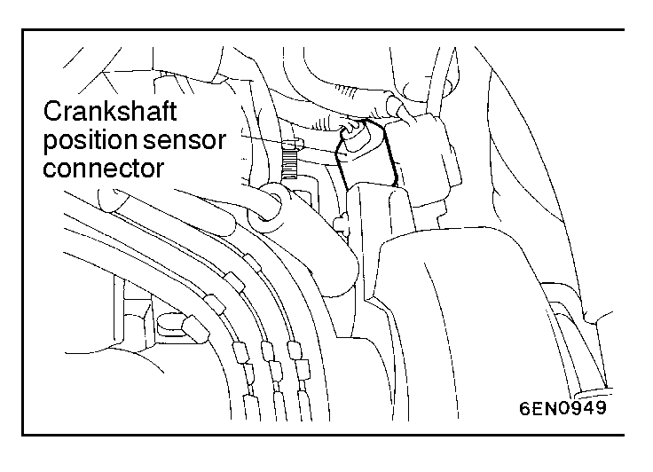
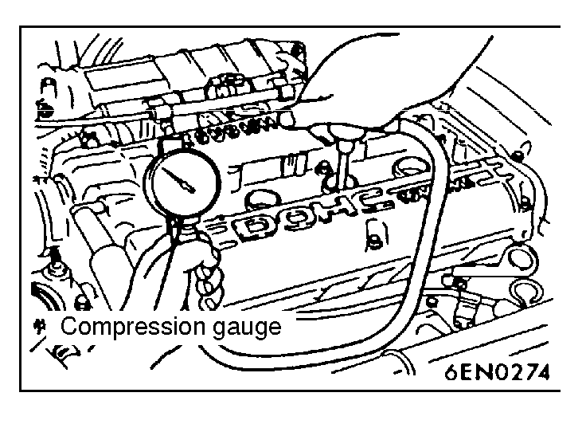

![[Previous]](https://mitsubishitechinfo.com/data/F24S/BUTTONS/fprevg.png)
![[Next]](https://mitsubishitechinfo.com/data/F24S/BUTTONS/fnextg.png)
 
COMPRESSION PRESSURE CHECK
1.Before inspection, check that the engine oil, starter and battery are normal. Also, set the vehicle to the following condition:
•Engine coolant temperature: 80 - 95°C (176 - 203°F)
•Lights, electric cooling fan and all accessories: OFF
•Transaxle: Neutral (P range on vehicles with A/T)
2.Disconnect the spark plug cables.
3.Remove all of the spark plugs.
4.Disconnect the crankshaft position sensor connector.
NOTE
Doing this will prevent the engine control unit from carrying out ignition and fuel injection.
5.Cover the spark plug hole with a shop towel etc., and after the engine has been cranked, check that no foreign material is adhering to the shop towel.
Caution
1.Keep away from the spark plug hole when cranking.
2.If compression is measured with water, oil, fuel, etc., that has come from cracks inside the cylinder, these materials will become heated and will gush out from the spark plug hole, which is dangerous.
6.Set compression gauge to one of the spark plug holes.
7.Crank the engine with the throttle valve fully open and measure the compression pressure.
Standard value (at engine speed of 250 - 400 r/min):1,250 kPa (178 psi)
Limit (at engine speed of 250 - 400 r/min):
min. 935 kPa (133 psi)
8.Measure the compression pressure for all the cylinders, and check that the pressure differences of the cylinders are below the limit.
Limit: max. 100 kPa (14 psi)
9.If there is a cylinder with compression or a compression difference that is outside the limit, pour a small amount of engine oil through the spark plug hole, and repeat the operations in steps 7 and 8.
(1)If the compression increases after oil is added, the cause of the malfunction is a worn or damaged piston ring and/or cylinder inner surface.
(2)If the compression does not rise after oil is added, the cause is a burnt or defective valve seat, or pressure is leaking from the gasket.
10.Connect the crankshaft position sensor connector.
11.Install the spark plugs and spark plug cables.
12.Use the scan tool to erase the diagnostic trouble codes, or disconnect the negative battery cable for more than 10 seconds and reconnect it.
NOTE
This will erase the diagnostic trouble code resulting from the crankshaft position sensor connector being disconnected.